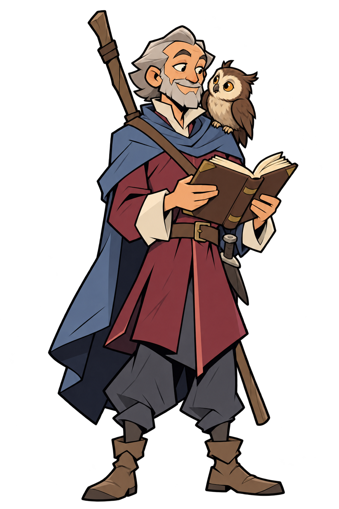
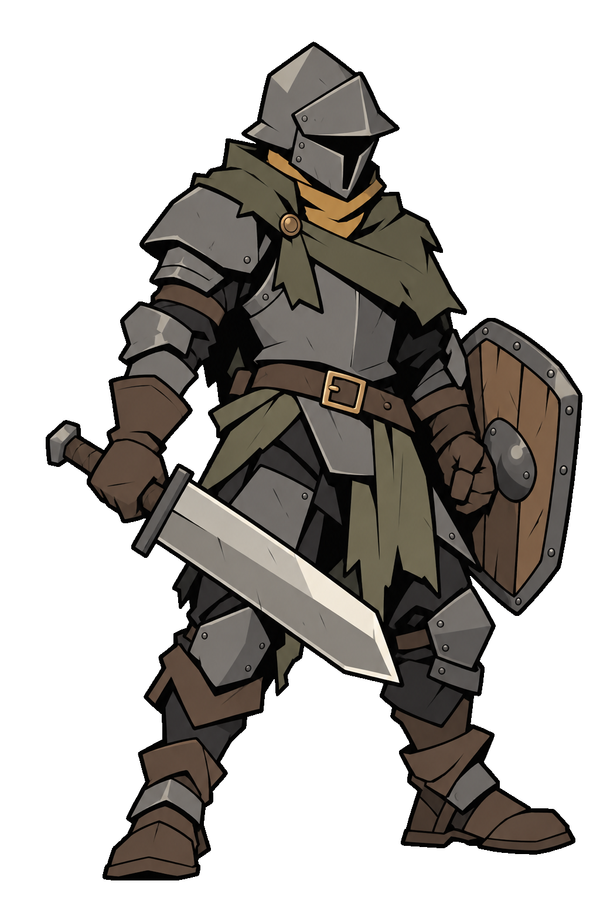
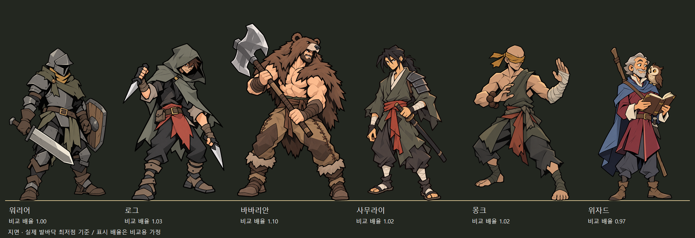
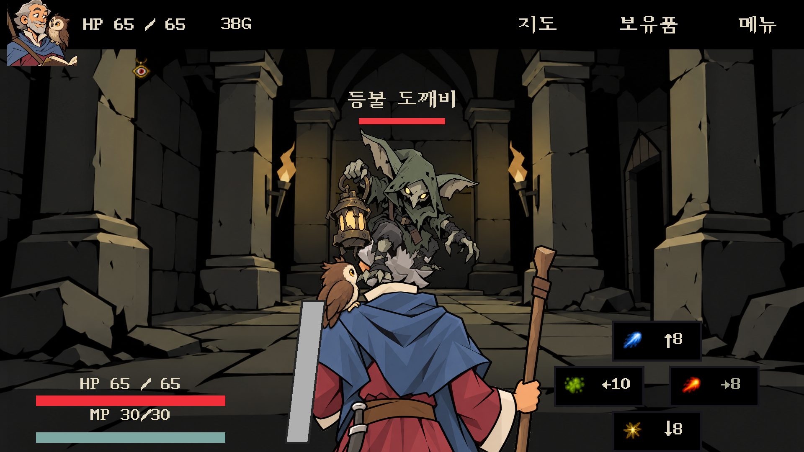
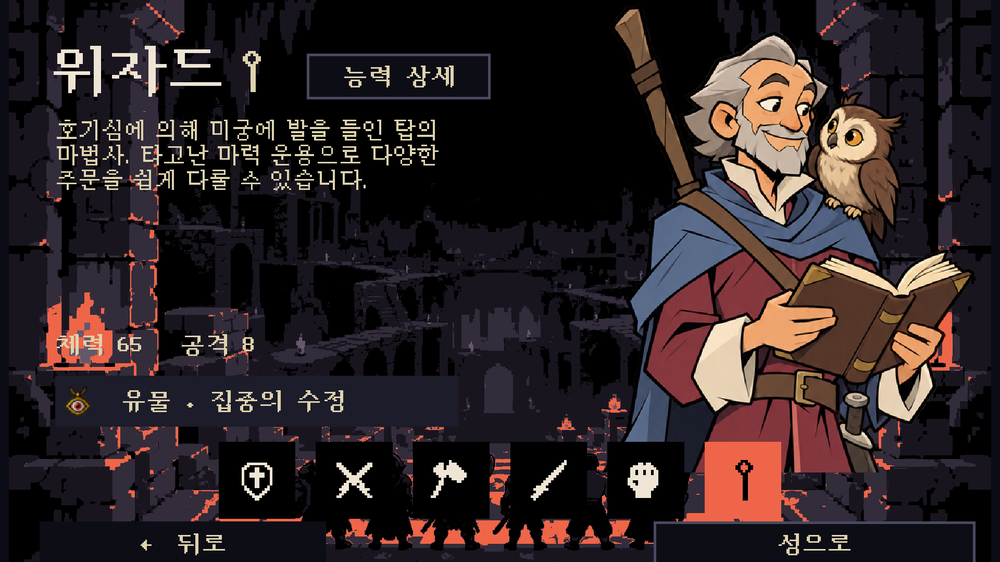
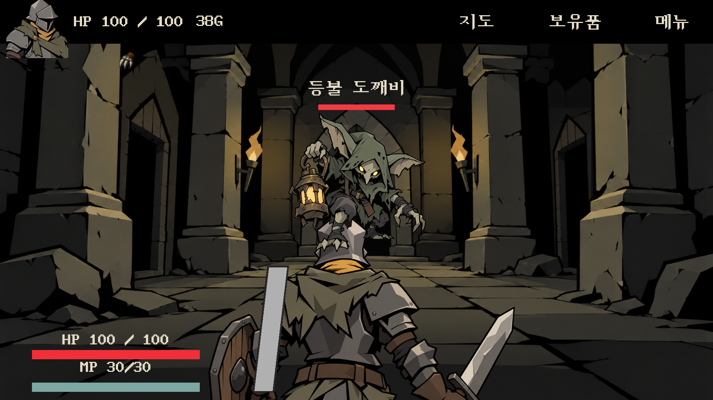

현재 적용본 · 바바리안 / 위자드
워리어는 요청하신 초기 팔·방패로 전후면 롤백하고 마무리했습니다. 새 방패 시안은 사용하지 않았습니다.
 바바리안 · 양손 도끼 준비 자세
바바리안 · 양손 도끼 준비 자세
후면11 · 지정한08 구도에서 도끼를 눕히고 가려진 쪽 손을 제거했습니다. 위자드 · 손에 든 스태프
위자드 · 손에 든 스태프
책을 든 왼팔은 몸 앞으로 굽혀 등 뒤에서는 책이 가려지는 구도.앞모습
 바바리안 · 승인된 앞모습 그대로
바바리안 · 승인된 앞모습 그대로
위자드 · 부엉이와 눈맞춤하던05 복원. 이번에 앞모습을 새로 그리지 않았습니다.워리어 · 롤백 완료

앞모습 · 초기 팔/방패 뒷모습 · 첨부해 주신 팔/방패 상태
뒷모습 · 첨부해 주신 팔/방패 상태현재 여섯 캐릭터 · 발 위치 정렬

같은 지면선에 실제 발바닥 최저점을 맞췄습니다. 신장 배율은 비교용 가정이며 게임 배율을 수정하지 않았습니다.
실제 Unity 화면
 바바리안 전투
바바리안 전투
위자드 전투
위자드 선택창 · 이전 앞모습 복원
워리어 전투 · 초기 팔 복원최신 바바리안 후면 검수 기록
바바리안 후면11 전후 비교 · 팔 연결 검수
수정/검수 기록 · 유지 파일 대조 · SelectionPage 실제 확인
저장 경로와 검증 · 내장 image_gen 채택 프롬프트